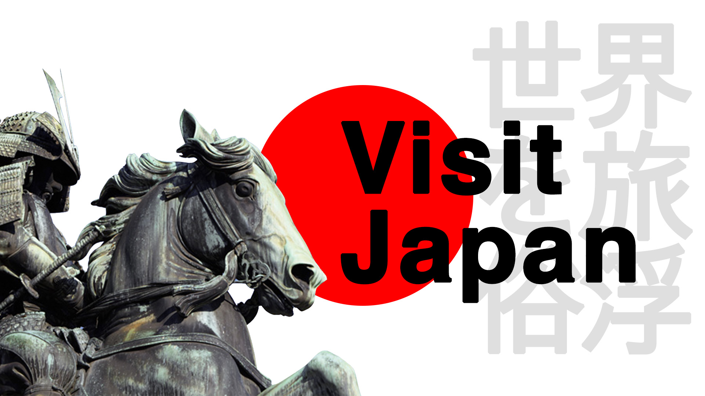

Γιατί να επισκεφτεί κάποιος την Ιαπωνία;
Από πού να ξεκινήσει κάποιος και που να τελειώσει! Αρχικά είναι μια εξωτική χώρα για τα μάτια των Ευρωπαίων. Είναι η χώρα του ανατέλλοντος ηλίου! Φέρει στην πλάτη της αιώνες πολιτισμού πολύ διαφορετικού από αυτόν που έχουμε συνηθίσει να βλέπουμε στη χώρα μας ή και στις γειτονικές. Αξίζει κάποιος να επισκεφτεί την Ιαπωνία – μόνο και μόνο ̶ γιατί θα αποκομίσει μια μοναδική εμπειρία ζωής που θα του αφήσει μοναδική παρακαταθήκη ιστοριών για να διηγείται. Η μοναδική αρχιτεκτονική της, τα υπέροχα φαγητά της Ιαπωνικής Κουζίνας αλλά και το πώς λειτουργούν οι άνθρωποι στην καθημερινή τους ρουτίνα μπορούμε να πούμε ότι μας ενθουσιάζει και σίγουρα είναι μια πτυχή που θέλουμε να δούμε στο ταξίδι μας!
Ποιοί είμαστε;
Ονειρεύεστε το τέλειο ταξίδι, γεμάτο περιπέτεια, ανακαλύψεις και αξέχαστες στιγμές; Στο ταξιδιωτικό γραφείο μας, κάνουμε τα όνειρά σας πραγματικότητα!
Με χρόνια εμπειρίας στον κλάδο του τουρισμού, προσφέρουμε εξατομικευμένες και προσεκτικά σχεδιασμένες διακοπές που ανταποκρίνονται στις ανάγκες και τις προτιμήσεις σας. Από τις μαγευτικές παραλίες της Okinawa μέχρι τους εξοχικούς οικισμούς του Kyoto, έχουμε το τέλειο πακέτο για κάθε τύπο ταξιδιού και για κάθε προϋπολογισμό.
To προσωπικό μας είναι εμπειρογνώμονες στο να δημιουργούν αξέχαστες εμπειρίες ταξιδίου. Με εξατομικευμένη προσοχή στη λεπτομέρεια και στην επιθυμία σας να ανακαλύψετε νέα μέρη και να δημιουργήσετε ανεπανάληπτες αναμνήσεις, είμαστε εδώ για να κάνουμε κάθε στιγμή του ταξιδιού σας μοναδική και αξέχαστη.
Επιλέξτε το ταξίδι σας μαζί μας και αφήστε μας να σας οδηγήσουμε σε ένα ταξίδι που θα θυμάστε για πάντα. Επικοινωνήστε μαζί μας σήμερα για να ξεκινήσουμε την επόμενη περιπέτειά σας!